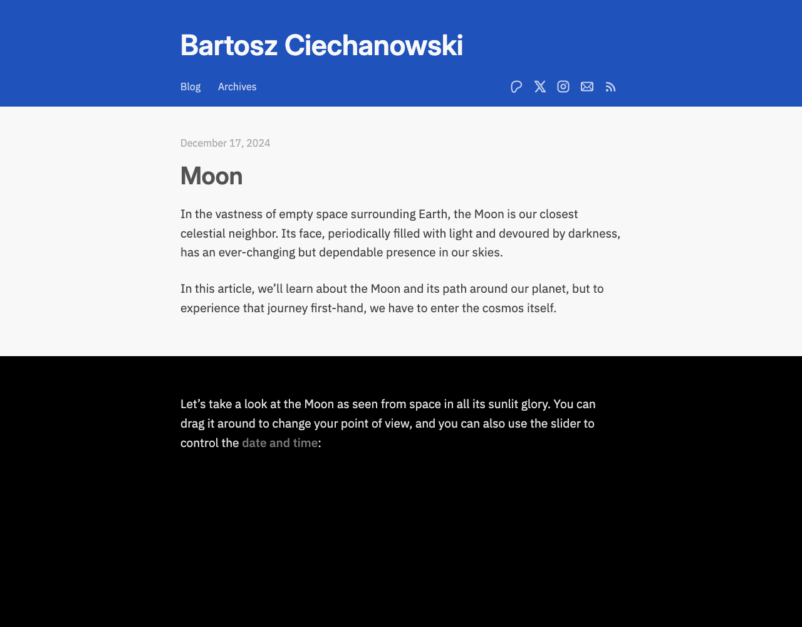
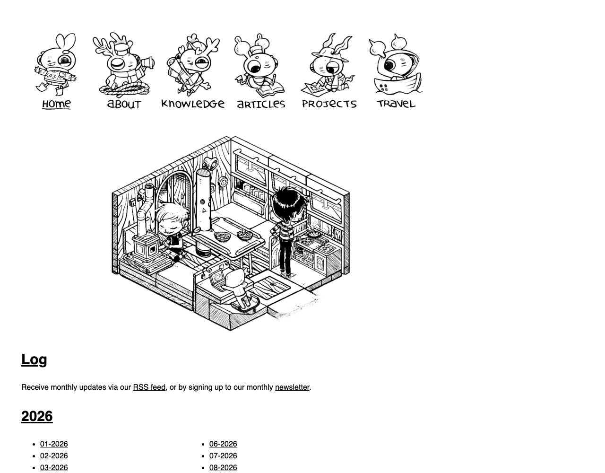
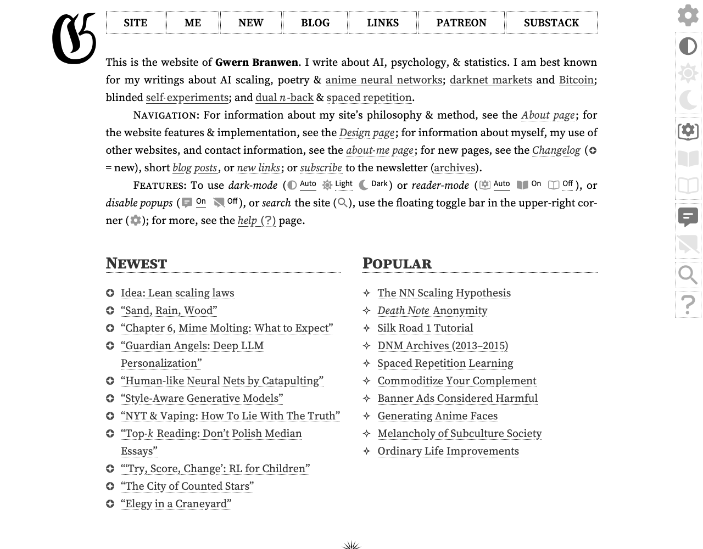
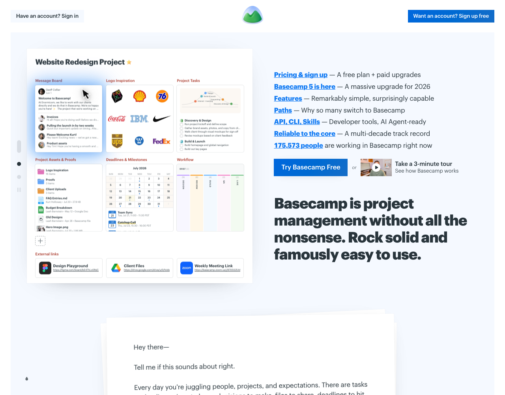
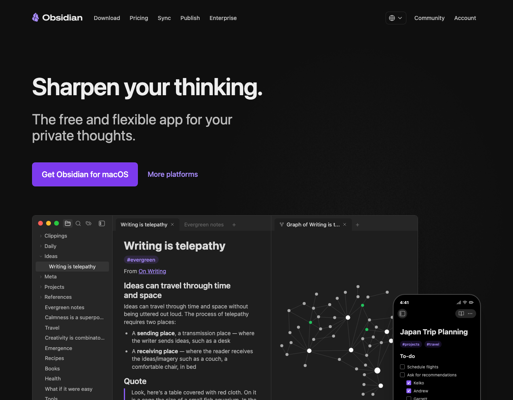

What I think the feel is, and where I'd steal from. You check.
Built from everything on file: the vision notes, the voice profile, your dictation, the tai chi work, the three draft briefs and what you said about each. Mark anything wrong. Ticks and crosses on the references are the most useful thing you can give back.
The feel, in one line
A well-made manual, written by someone who finds this genuinely exciting.
"Calm body, cheeky edge" is already decided. This is what I think it means on a page:
- Plain text is the material, not the costume. Mono where the markdown shows: heading markers, code, labels, figure numbers. A proper reading face for the prose. Not all-mono, which you found boring, and not all-marketing, which hides what the site is.
- Explain by showing. Figures, diagrams, raw-beside-rendered. The vision doc says "demonstrate, don't proclaim". makingsoftware and Ciechanowski are the model: the diagram is the argument.
- One confident colour on light paper, plus ink. Blue is a candidate because you liked it, not a decision. The warmth comes from drawing (the ink figure, line illustrations), not from a peach palette.
- A human in it. The tai chi figure is the site's character. Side-on, brush, flow. That's the energy, as you said: not something chomping.
- Notion-level polish, Wikipedia-level honesty. Generous spacing, nothing cramped, and limits stated out loud.
- The cheek lives in words and small details. Footnotes, figure captions, an "EOF" at the bottom, the manifesto's jokes. Never in the layout.
Three feels to mock next, with their references
Each is built from a different set of references, not from one baseline. Next round: three full front pages, one per feel, stacked on one page. Say which two or three to build, or swap one.
Explanatory, diagrams, one colour
makingsoftware, Ciechanowski, Oxide. Figures with numbers, a dotted grid, serif prose. This round's A is the existing version. Risk: cold.
The page is a markdown file
code.storage, 100 Rabbits, gwern. Mono-led, # headings, ASCII tables, ink drawings for warmth. The pure monospace option. Risk: boring unless the drawings carry it.
Friendly type, illustration, colour with life
Way Into AI, Notion, Basecamp, PostHog, Wikimedia. Big readable headline, a drawn hero, two or three flat colours, cheek in the copy. The Way Into AI-like option. Risk: looks like every SaaS page.
References
Screenshots taken today. For each: what I'd take, what I'd leave. Your references first, mine after. Way Into AI isn't here because I can't screenshot the artifact, but it's the model for feel 3 and for the process.

makingsoftware.com
TakeNumbered figures, the dotted grid, cobalt line drawings, serif prose beside them, the explanatory tone. Direction 1 came from here.
LeaveThe pixel display face and the pure reference-manual structure. We have a front door to build, they don't.

ciechanow.ski
TakeOne strong blue, calm prose, and the idea that an interactive figure can do the explaining. The explainer and the tai chi figure sit in this tradition.
LeaveThe plainness of the chrome. It's an essay site, not a guide with many doors.

code.storage
TakeThe page reads as markdown source: # headings, * bullets, ~*~ rules, mono throughout. On-message for us in a way it isn't for them.
LeaveThe 3D blob (you said far too elaborate) and the uniform grey. All-mono needs a second element to not be boring.

100r.co
TakePlain HTML with ink drawings doing all the warmth. A character in the nav. This is the "plain text plus a human" combination feel 2 needs.
LeaveThe cartoon style. Ours is the brush figure, not a mascot.

gwern.net
TakeThe essay-as-site stance, dense and honest, small-caps labels, everything a document. The Why area could live like this.
LeaveThe density and the gothic. Non-technical readers bounce off this.
oxide.computer
Take"FIG. 1" labels on a product page, mono caps labels with a big plain headline, a terminal as a figure. Proof the manual feel can carry a front door.
LeaveDark mode and the enterprise weight. We're light paper.

notion.com
TakeThe bar for polish: one huge plain headline, lots of air, a drawn character in the corner, a real product shot. Accessible to anyone.
LeaveThe pill highlight and the fact that nothing about it says "files". We need the page to show the thing itself.

basecamp.com
TakeThe voice: "without all the nonsense", a letter on the front page, links with one-line glosses. Opinionated and warm at once. Closest to your register.
LeaveThe product-shot hero. Ours would be a figure or a file.

posthog.com
TakeGeeky and cheeky without losing polish. Desktop-window chrome, jokes in the cookie banner, illustration everywhere. The "cheeky edge" done by a real company.
LeaveNearly all of it visually. Too much. Take the attitude only.

obsidian.md
TakeWhere our sweet-spot audience already lives. Headline is a promise ("Sharpen your thinking"), not a feature. Note how the file tree is the hero.
LeaveThe dark gradient look. We shouldn't look like a tool vendor.

Wikimedia Thank You 2019 header

TakeFlat fills, ink outlines, three colours (indigo, green, orange) plus grey, isometric panels, small figures doing things. The illustration system in brand.md is this. It's fun and it's open-web, which is our tribe.
LeaveNothing, but note it's a hand-drawn commission. We can do one panel at a time, not a mural.
The headline question
You're right. "Markdown is eating the world" is the thesis and an essay title. It belongs on the Why page and in the kicker, not as the front-page type. The front page should say what this is: the Way, the practical guide plus the philosophy. Candidates for the front page, none chosen. The kicker above any of them can be small mono: Markdown is eating the world.
- 01The Way of Markdown
Name as headline, like a book cover. Then one line that says what you get. The current site does this, and it answers "what is this?" before anything else.
- 02Own the source. Compose with anything.
Your line, on the live site today. Philosophy and practice in six words. Weak point: "source" reads as code to non-technical people.
- 03Notes, docs, a website, even a Notion replacement. Plain files you own, tools you can swap.
The value proposition as the headline. Says what you can do and why files. Long, but every word is a door.
- 04There's a better way to do your notes, docs and site. It's plain text.
The Way as a promise, with the reveal. Cheeky, and it makes people ask the next question.
- 05How to do what you already do, with files you own.
The offer in the reader's terms. Calm, honest, no jargon. Possibly too quiet for a front page.
My pick, lightly held: 01 as the headline, 03 or 04 as the line under it, kicker above. The name is the brand, the line is the offer, the kicker is the hook.
What I need from you
- References: tick or cross each, one line if you like. Add any I've missed.
- Feels: which two or three to build next round. Or rename one.
- Headline: which candidate, or a line of your own. Rough is fine.
- Anything in the feel paragraph that's wrong.